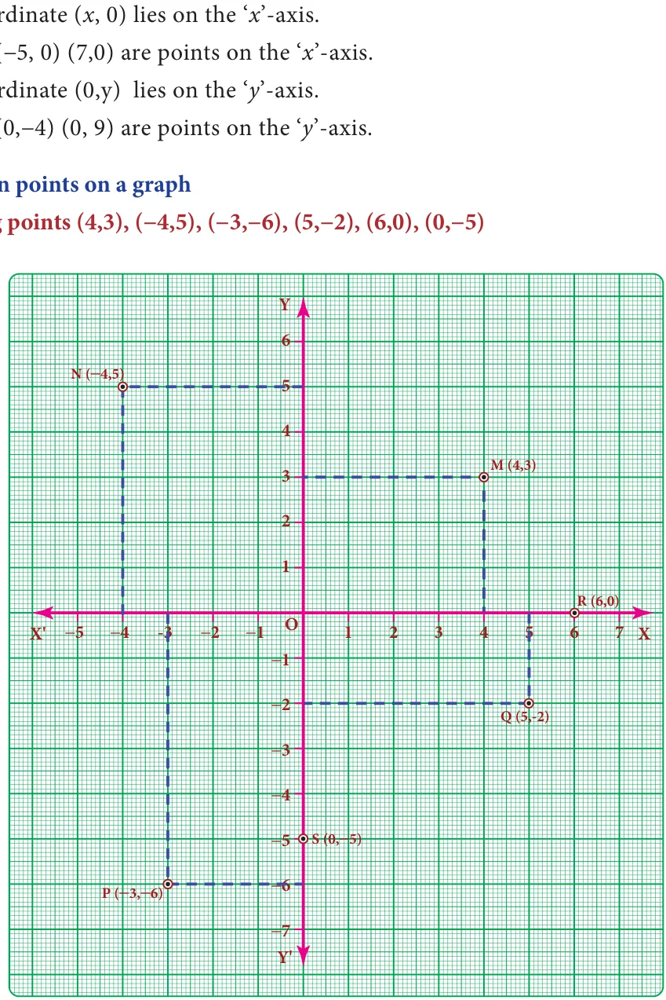
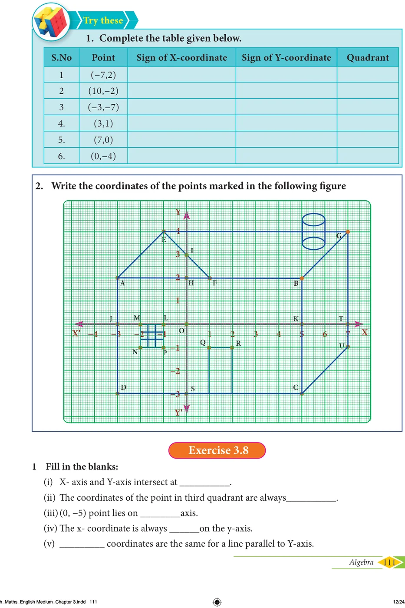

<!DOCTYPE html>
<html lang="en">
<head>
<meta charset="UTF-8">
<meta name="viewport" content="width=device-width,initial-scale=1">
<title>3.9 Graph — Algebra</title>
<meta name="description" content="Class 8 Mathematics · Algebra · 3.9 Graph">
<link rel="icon" href="data:image/svg+xml,<svg xmlns='http://www.w3.org/2000/svg' viewBox='0 0 100 100'><text y='.9em' font-size='90'>📘</text></svg>">
<link rel="stylesheet" href="../../../assets/book.css">
<link rel="stylesheet" href="https://cdn.jsdelivr.net/npm/katex@0.16.11/dist/katex.min.css" crossorigin="anonymous">
</head>
<body>
<header class="topbar">
<div class="topbar-in">
  <div class="crumb">
    <span class="c1"><a href="../../../index.html">Library</a> · <a href="../../index.html">Class 8 Mathematics</a></span>
    <span class="c2">Algebra · 3.9 Graph</span>
  </div>
  <a class="tb-btn" data-nav="prev" href="../../03-algebra/17-exercise-3.7/index.html" title="Exercise 3.7">←</a>
  <details class="drawer"><summary class="tb-btn" title="Sections in this chapter">☰</summary>
<div class="drawer-panel"><div class="dh">Algebra</div><a href="../01-chapter-opener/index.html">Chapter opener</a><a href="../02-introduction-3.1/index.html">3.1 Introduction</a><a href="../03-multiplication-of-algebraic-expressions-3.2/index.html">3.2 Multiplication of Algebraic Expressions</a><a href="../04-exercise-3.1/index.html">Exercise 3.1</a><a href="../05-division-of-algebraic-expressions-3.3/index.html">3.3 Division of Algebraic Expressions</a><a href="../06-avoid-some-common-errors-3.4/index.html">3.4 Avoid Some Common Errors</a><a href="../07-exercise-3.2/index.html">Exercise 3.2</a><a href="../08-identities-3.5/index.html">3.5 Identities</a><a href="../09-cubic-identities-3.6/index.html">3.6 Cubic Identities</a><a href="../10-exercise-3.3/index.html">Exercise 3.3</a><a href="../11-factorisation-3.7/index.html">3.7 Factorisation</a><a href="../12-exercise-3.4/index.html">Exercise 3.4</a><a href="../13-exercise-3.5/index.html">Exercise 3.5</a><a href="../14-linear-equation-in-one-variable-3.8/index.html">3.8 Linear Equation in One Variable</a><a href="../15-exercise-3.6/index.html">Exercise 3.6</a><a href="../16-word-problems-that-involve-linear-equations-3.8.5/index.html">3.8.5 Word problems that involve linear equations</a><a href="../17-exercise-3.7/index.html">Exercise 3.7</a><a href="../18-graph-3.9/index.html" aria-current="page">3.9 Graph</a><a href="../19-exercise-3.8/index.html">Exercise 3.8</a><a href="../20-to-obtain-a-straight-line-3.9.7/index.html">3.9.7 To obtain a straight line</a><a href="../21-linear-graph-3.10/index.html">3.10 Linear Graph</a><a href="../22-exercise-3.9/index.html">Exercise 3.9</a><a href="../23-exercise-3.10/index.html">Exercise 3.10</a><a href="../24-summary/index.html">SUMMARY</a></div></details>
  <a class="tb-btn" data-nav="next" href="../../03-algebra/19-exercise-3.8/index.html" title="Exercise 3.8">→</a>
  <button class="tb-btn" data-theme-toggle title="Toggle light / dark" aria-label="Toggle light or dark theme">◐</button>
</div>
<div class="progress"><span style="width:40.7%"></span></div>
</header>
<main class="wrap">
<div class="sec-head">
  <p class="eyebrow"><a href="../index.html">Chapter 3 · Algebra</a></p>
  <h1>3.9 Graph</h1>
  <p class="sec-meta">Textbook pages 34–38 · 5 figures</p>
</div>
<article class="prose">
<h3 id="s-3-9-1-introduction">3.9.1 Introduction</h3>
<p>There was an instance in the 17 century when Rene North Descartes, a famous mathematician became ill and from his bed, noticed an insect hovering over a corner and sitting at various places on the ceiling. He wanted to identify all the places where the insect sat on the ceiling. Immediately, he drew the top plane of the room in a paper, creating the horizontal and vertical lines. Based on these perpendicular lines, he used the directions and understood that the places of the insect can be spotted by the movement of the insect in the east, west, north and south directions. He called that South place as (x,y) in the plane which indicates two values, one</p>
<p>th</p>
<figure class="fig side-fig"></figure>
<ul class="qlist">
<li><span class="mk">(x)</span><span class="lt">in the horizontal direction and the other (y) in the vertical direction (say east and north in this</span></li>
</ul>
<p>case). This is how the concept of graphs came into existence.</p>
<h3 id="s-3-9-2-graph-sheets">3.9.2 Graph sheets</h3>
<p>Graph is just a visual method for showing relationships between numbers. In the previous class, we studied how to represent integers on a number line horizontally. Now take one more number line - vertically. We take the graph sheet keeping both number lines mutually perpendicular to each other at ‘0’zero as given in the figure. The number lines and the marking integers should be placed along the dark lines of the graph sheet.</p>
<figure class="fig table-fig wide"></figure>
<figure class="fig table-fig wide"></figure>
<p>Coordinate of a point on the axes:</p>
<figure class="fig table-fig"></figure>
<ul class="qlist">
<li><span class="mk">•</span><span class="lt">If x</span></li>
<li><span class="mk">(i)</span><span class="lt">To locate (4,3).</span></li>
</ul>
<p>Start from origin O, move 4 units along OX and from 4, move 3 units parallel to OY to reach M(4,3).</p>
<ul class="qlist">
<li><span class="mk">(ii)</span><span class="lt">To locate ( \(- 4,5)\)</span></li>
</ul>
<p>From the origin, move 4 units along OX' and from \(- 4\), move 5 units parallel to OY to reach N( \(- 4,5)\).</p>
<ul class="qlist">
<li><span class="mk">(iii)</span><span class="lt">To locate ( -</span></li>
</ul>
<p>From the origin move 3units along OX' and from \(- 3\), move 6 units parallel to OY' to reach P(-3,-6).</p>
<ul class="qlist">
<li><span class="mk">(iv)</span><span class="lt">To locate (5,</span></li>
</ul>
<p>From the origin move 5 points along OX and from 5, move 2 units parallel to OY' to reach Q(5, \(- 2)\).</p>
<ul class="qlist">
<li><span class="mk">(v)</span><span class="lt">To locate (6,0) and (0,</span></li>
</ul>
<p>x In the given point (0, \(- 5)\) X-coordinate is zero and Y- coordinate is ( \(- 5)\). So, the point lies on Y-axis. Move 5 units on OY' from the origin to reach S (0, \(- 5)\).</p>
<figure class="fig table-fig wide"></figure>
</article>
<nav class="pager"><a class="" data-nav="prev" href="../../03-algebra/17-exercise-3.7/index.html"><span class="dir">← Previous</span><span class="t">Exercise 3.7</span><span class="ch">Algebra</span></a><a class="nx" data-nav="next" href="../../03-algebra/19-exercise-3.8/index.html"><span class="dir">Next →</span><span class="t">Exercise 3.8</span><span class="ch">Algebra</span></a></nav>
</main><footer class="site">Generated from the source textbook PDFs · text, figures and exercises belong to their respective publishers.</footer><script defer src="https://cdn.jsdelivr.net/npm/katex@0.16.11/dist/katex.min.js" crossorigin="anonymous"></script>
<script defer src="https://cdn.jsdelivr.net/npm/katex@0.16.11/dist/contrib/auto-render.min.js" crossorigin="anonymous"
  onload="renderMathInElement(document.body,{delimiters:[
    {left:'\\(',right:'\\)',display:false},
    {left:'$$',right:'$$',display:true},
    {left:'\\[',right:'\\]',display:true}],throwOnError:false,ignoredTags:['script','noscript','style','textarea','pre','code']})"></script>
<script src="../../../assets/book.js"></script>
<script defer src="../../../../assets/search.js"></script>
</body>
</html>
